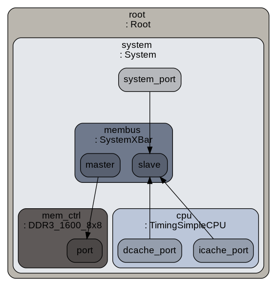

Building a gem5 configuration script
gem5 consists of various simobjects such as Clock, Interrupt controller, Cache etc, which can be used to create a system. This simobjects are written in C++
To create a System we need to build a configuration script in python. So gem5 uses python to call the simObject and simObjects are written in C++ which makes its operational faster and customizable.
We will build a configuration system like this:

1. Create a configuration script
Create a new file with py extension Ex. simple.py. I have created a new directory named myScripts under configs folder
mkdir configs/myScripts
gedit configs/myScripts/simple.py
Step 1. Import m5 library
import m5
from m5.objects import *
Step 2. Create a system object
We are selecting riscv system object
system = System()
Step 3. Setup a clock domain
We will create a clock_domain system object and give default voltage with frequency of 1GHz
system.clk_domain=SrcClockDomain()
system.clk_domain.clock = '1GHz'
system.clk_domain.voltage_domain=VoltageDomain()
Step 4. Setup memory mode
We will memory of 512Mb operating in timing mode
system.mem_mode='timing'
system.mem_ranges= [AddrRange('512MB')]
Step 5. Create a CPU
We are using the TimingSimpleCPU simObject. There are other CPU objects too such as AtomicSimple, O3, In-Order
system.cpu= TimingSimpleCPU()
Step 6. Create a memory bus
create a memory bus for connection between CPU and memory controller
system.membus = SystemXBar()
Step 7. Connect membus to CPU
We are connecting CPU to membus using icache and dcache port which will be used later to install cache simObject between them
system.cpu.icache_port=system.membus.slave
system.cpu.dcache_port=system.membus.slave
Step 8. Create an Interrupt controller
system.cpu.createInterruptController()
system.system_port=system.membus.slave
Step 9. Create a memory controller
system.mem_ctrl = DDR3_1600_8x8()
system.mem_ctrl.range=system.mem_ranges[0]
system.mem_ctrl.port=system.membus.master
Step 10. Create a process
Create a process and give command to process to denote which object file to run. Currently for
this case we will be using test-progs named hello world. Add this process as workload to the system and create threads
process =Process()
process.cmd=['tests/test-progs/hello/bin/riscv/linux/hello']
system.cpu.workload= process
system.cpu.createThreads()
Step 11. Create a root object and instantiate m5 object to run the simulation
root=Root(full_system=False, system=system)
m5.instantiate()
print("Beginning Simulation...")
exit_event=m5.simulate()
print("Exiting @ tick {} because {}".format(m5.curTick(),exit_event.getCause()))
2. Run the script
To run the python script type this in command line in the gem5 directory
build/RISCV/gem5.opt configs/myScripts/simple.py
3. Output
gem5 Simulator System. http://gem5.org
gem5 is copyrighted software; use the --copyright option for details.
gem5 version 20.0.0.2
gem5 compiled Jul 13 2020 00:13:37
gem5 started Jul 13 2020 03:46:35
gem5 executing on bthakar-PC, pid 30541
command line: build/RISCV/gem5.opt configs/pythonscripts/simple.py
Global frequency set at 1000000000000 ticks per second
warn: DRAM device capacity (8192 Mbytes) does not match the address range assigned (512 Mbytes)
0: system.remote_gdb: listening for remote gdb on port 7000
Beginning Simulation...
info: Entering event queue @ 0. Starting simulation...
warn: readlink() called on '/proc/self/exe' may yield unexpected results in various settings.
Returning '/home/bthakar/MyWork/gem5/tests/test-progs/hello/bin/riscv/linux/hello'
info: Increasing stack size by one page.
Hello world!
Exiting @ tick 446784000 because exiting with last active thread context
To download the code click
Go to m5out folder in to view the stats file of the process. It describes the readings of all the parameters used
---------- Begin Simulation Statistics ----------
final_tick 446784000 # Number of ticks from beginning of simulation (restored from checkpoints and never reset)
host_inst_rate 323053 # Simulator instruction rate (inst/s)
host_mem_usage 673296 # Number of bytes of host memory used
host_op_rate 323284 # Simulator op (including micro ops) rate (op/s)
host_seconds 0.02 # Real time elapsed on the host
host_tick_rate 24519996202 # Simulator tick rate (ticks/s)
sim_freq 1000000000000 # Frequency of simulated ticks
sim_insts 5862 # Number of instructions simulated
sim_ops 5886 # Number of ops (including micro ops) simulated
sim_seconds 0.000447 # Number of seconds simulated
sim_ticks 446784000 # Number of ticks simulated
system.cpu.Branches 1298 # Number of branches fetched
system.cpu.committedInsts 5862 # Number of instructions committed
system.cpu.committedOps 5886 # Number of ops (including micro ops) committed
system.cpu.dtb.accesses 0 # DTB accesses
system.cpu.dtb.hits 0 # DTB hits
system.cpu.dtb.misses 0 # DTB misses
system.cpu.dtb.read_accesses 0 # DTB read accesses
system.cpu.dtb.read_hits 0 # DTB read hits
system.cpu.dtb.read_misses 0 # DTB read misses
system.cpu.dtb.write_accesses 0 # DTB write accesses
system.cpu.dtb.write_hits 0 # DTB write hits
system.cpu.dtb.write_misses 0 # DTB write misses
system.cpu.idle_fraction 0.000000 # Percentage of idle cycles
system.cpu.itb.accesses 0 # DTB accesses
system.cpu.itb.hits 0 # DTB hits
system.cpu.itb.misses 0 # DTB misses
system.cpu.itb.read_accesses 0 # DTB read accesses
system.cpu.itb.read_hits 0 # DTB read hits
system.cpu.itb.read_misses 0 # DTB read misses
system.cpu.itb.write_accesses 0 # DTB write accesses
system.cpu.itb.write_hits 0 # DTB write hits
system.cpu.itb.write_misses 0 # DTB write misses
system.cpu.not_idle_fraction 1.000000 # Percentage of non-idle cycles
system.cpu.numCycles 446784 # number of cpu cycles simulated
system.cpu.numWorkItemsCompleted 0 # number of work items this cpu completed
system.cpu.numWorkItemsStarted 0 # number of work items this cpu started
system.cpu.num_busy_cycles 446783.999000 # Number of busy cycles
system.cpu.num_conditional_control_insts 1003 # number of instructions that are conditional controls
system.cpu.num_fp_alu_accesses 12 # Number of float alu accesses
system.cpu.num_fp_insts 12 # number of float instructions
system.cpu.num_fp_register_reads 12 # number of times the floating registers were read
system.cpu.num_fp_register_writes 0 # number of times the floating registers were written
system.cpu.num_func_calls 232 # number of times a function call or return occured
system.cpu.num_idle_cycles 0.001000 # Number of idle cycles
system.cpu.num_int_alu_accesses 5801 # Number of integer alu accesses
system.cpu.num_int_insts 5801 # number of integer instructions
system.cpu.num_int_register_reads 7410 # number of times the integer registers were read
system.cpu.num_int_register_writes 3624 # number of times the integer registers were written
system.cpu.num_load_insts 1112 # Number of load instructions
system.cpu.num_mem_refs 2190 # number of memory refs
system.cpu.num_store_insts 1078 # Number of store instructions
system.cpu.num_vec_alu_accesses 0 # Number of vector alu accesses
system.cpu.num_vec_insts 0 # number of vector instructions
system.cpu.num_vec_register_reads 0 # number of times the vector registers were read
system.cpu.num_vec_register_writes 0 # number of times the vector registers were written
system.cpu.op_class::No_OpClass 34 0.58% 0.58% # Class of executed instruction
system.cpu.op_class::IntAlu 3668 62.19% 62.77% # Class of executed instruction
system.cpu.op_class::IntMult 2 0.03% 62.80% # Class of executed instruction
system.cpu.op_class::IntDiv 4 0.07% 62.87% # Class of executed instruction
system.cpu.op_class::FloatAdd 0 0.00% 62.87% # Class of executed instruction
system.cpu.op_class::FloatCmp 0 0.00% 62.87% # Class of executed instruction
system.cpu.op_class::FloatCvt 0 0.00% 62.87% # Class of executed instruction
system.cpu.op_class::FloatMult 0 0.00% 62.87% # Class of executed instruction
system.cpu.op_class::FloatMultAcc 0 0.00% 62.87% # Class of executed instruction
system.cpu.op_class::FloatDiv 0 0.00% 62.87% # Class of executed instruction
system.cpu.op_class::FloatMisc 0 0.00% 62.87% # Class of executed instruction
system.cpu.op_class::FloatSqrt 0 0.00% 62.87% # Class of executed instruction
system.cpu.op_class::SimdAdd 0 0.00% 62.87% # Class of executed instruction
system.cpu.op_class::SimdAddAcc 0 0.00% 62.87% # Class of executed instruction
system.cpu.op_class::SimdAlu 0 0.00% 62.87% # Class of executed instruction
system.cpu.op_class::SimdCmp 0 0.00% 62.87% # Class of executed instruction
system.cpu.op_class::SimdCvt 0 0.00% 62.87% # Class of executed instruction
system.cpu.op_class::SimdMisc 0 0.00% 62.87% # Class of executed instruction
system.cpu.op_class::SimdMult 0 0.00% 62.87% # Class of executed instruction
system.cpu.op_class::SimdMultAcc 0 0.00% 62.87% # Class of executed instruction
system.cpu.op_class::SimdShift 0 0.00% 62.87% # Class of executed instruction
system.cpu.op_class::SimdShiftAcc 0 0.00% 62.87% # Class of executed instruction
system.cpu.op_class::SimdDiv 0 0.00% 62.87% # Class of executed instruction
system.cpu.op_class::SimdSqrt 0 0.00% 62.87% # Class of executed instruction
system.cpu.op_class::SimdFloatAdd 0 0.00% 62.87% # Class of executed instruction
system.cpu.op_class::SimdFloatAlu 0 0.00% 62.87% # Class of executed instruction
system.cpu.op_class::SimdFloatCmp 0 0.00% 62.87% # Class of executed instruction
system.cpu.op_class::SimdFloatCvt 0 0.00% 62.87% # Class of executed instruction
system.cpu.op_class::SimdFloatDiv 0 0.00% 62.87% # Class of executed instruction
system.cpu.op_class::SimdFloatMisc 0 0.00% 62.87% # Class of executed instruction
system.cpu.op_class::SimdFloatMult 0 0.00% 62.87% # Class of executed instruction
system.cpu.op_class::SimdFloatMultAcc 0 0.00% 62.87% # Class of executed instruction
system.cpu.op_class::SimdFloatSqrt 0 0.00% 62.87% # Class of executed instruction
system.cpu.op_class::SimdReduceAdd 0 0.00% 62.87% # Class of executed instruction
system.cpu.op_class::SimdReduceAlu 0 0.00% 62.87% # Class of executed instruction
system.cpu.op_class::SimdReduceCmp 0 0.00% 62.87% # Class of executed instruction
system.cpu.op_class::SimdFloatReduceAdd 0 0.00% 62.87% # Class of executed instruction
system.cpu.op_class::SimdFloatReduceCmp 0 0.00% 62.87% # Class of executed instruction
system.cpu.op_class::SimdAes 0 0.00% 62.87% # Class of executed instruction
system.cpu.op_class::SimdAesMix 0 0.00% 62.87% # Class of executed instruction
system.cpu.op_class::SimdSha1Hash 0 0.00% 62.87% # Class of executed instruction
system.cpu.op_class::SimdSha1Hash2 0 0.00% 62.87% # Class of executed instruction
system.cpu.op_class::SimdSha256Hash 0 0.00% 62.87% # Class of executed instruction
system.cpu.op_class::SimdSha256Hash2 0 0.00% 62.87% # Class of executed instruction
system.cpu.op_class::SimdShaSigma2 0 0.00% 62.87% # Class of executed instruction
system.cpu.op_class::SimdShaSigma3 0 0.00% 62.87% # Class of executed instruction
system.cpu.op_class::SimdPredAlu 0 0.00% 62.87% # Class of executed instruction
system.cpu.op_class::MemRead 1121 19.01% 81.88% # Class of executed instruction
system.cpu.op_class::MemWrite 1057 17.92% 99.80% # Class of executed instruction
system.cpu.op_class::FloatMemRead 0 0.00% 99.80% # Class of executed instruction
system.cpu.op_class::FloatMemWrite 12 0.20% 100.00% # Class of executed instruction
system.cpu.op_class::IprAccess 0 0.00% 100.00% # Class of executed instruction
system.cpu.op_class::InstPrefetch 0 0.00% 100.00% # Class of executed instruction
system.cpu.op_class::total 5898 # Class of executed instruction
system.cpu.workload.numSyscalls 9 # Number of system calls
system.membus.snoop_filter.hit_multi_requests 0 # Number of requests hitting in the snoop filter with multiple (>1) holders of the requested data.
system.membus.snoop_filter.hit_multi_snoops 0 # Number of snoops hitting in the snoop filter with multiple (>1) holders of the requested data.
system.membus.snoop_filter.hit_single_requests 0 # Number of requests hitting in the snoop filter with a single holder of the requested data.
system.membus.snoop_filter.hit_single_snoops 0 # Number of snoops hitting in the snoop filter with a single holder of the requested data.
system.membus.snoop_filter.tot_requests 0 # Total number of requests made to the snoop filter.
system.membus.snoop_filter.tot_snoops 0 # Total number of snoops made to the snoop filter.
system.membus.trans_dist::ReadReq 8133 # Transaction distribution
system.membus.trans_dist::ReadResp 8141 # Transaction distribution
system.membus.trans_dist::WriteReq 1058 # Transaction distribution
system.membus.trans_dist::WriteResp 1058 # Transaction distribution
system.membus.trans_dist::LoadLockedReq 8 # Transaction distribution
system.membus.trans_dist::StoreCondReq 8 # Transaction distribution
system.membus.trans_dist::StoreCondResp 8 # Transaction distribution
system.membus.trans_dist::SwapReq 9 # Transaction distribution
system.membus.trans_dist::SwapResp 9 # Transaction distribution
system.membus.pkt_count_system.cpu.icache_port::system.mem_ctrl.port 14058 # Packet count per connected master and slave (bytes)
system.membus.pkt_count_system.cpu.dcache_port::system.mem_ctrl.port 4374 # Packet count per connected master and slave (bytes)
system.membus.pkt_count::total 18432 # Packet count per connected master and slave (bytes)
system.membus.pkt_size_system.cpu.icache_port::system.mem_ctrl.port 28116 # Cumulative packet size per connected master and slave (bytes)
system.membus.pkt_size_system.cpu.dcache_port::system.mem_ctrl.port 15635 # Cumulative packet size per connected master and slave (bytes)
system.membus.pkt_size::total 43751 # Cumulative packet size per connected master and slave (bytes)
system.membus.snoops 0 # Total snoops (count)
system.membus.snoopTraffic 0 # Total snoop traffic (bytes)
system.membus.snoop_fanout::samples 9216 # Request fanout histogram
system.membus.snoop_fanout::mean 0 # Request fanout histogram
system.membus.snoop_fanout::stdev 0 # Request fanout histogram
system.membus.snoop_fanout::underflows 0 0.00% 0.00% # Request fanout histogram
system.membus.snoop_fanout::0 9216 100.00% 100.00% # Request fanout histogram
system.membus.snoop_fanout::1 0 0.00% 100.00% # Request fanout histogram
system.membus.snoop_fanout::overflows 0 0.00% 100.00% # Request fanout histogram
system.membus.snoop_fanout::min_value 0 # Request fanout histogram
system.membus.snoop_fanout::max_value 0 # Request fanout histogram
system.membus.snoop_fanout::total 9216 # Request fanout histogram
system.membus.reqLayer0.occupancy 10291000 # Layer occupancy (ticks)
system.membus.reqLayer0.utilization 2.3 # Layer utilization (%)
system.membus.respLayer1.occupancy 3642750 # Layer occupancy (ticks)
system.membus.respLayer1.utilization 0.8 # Layer utilization (%)
system.membus.respLayer0.occupancy 15977500 # Layer occupancy (ticks)
system.membus.respLayer0.utilization 3.6 # Layer utilization (%)
system.membus.power_state.pwrStateResidencyTicks::UNDEFINED 446784000 # Cumulative time (in ticks) in various power states
system.mem_ctrl.bytes_read::.cpu.inst 28116 # Number of bytes read from this memory
system.mem_ctrl.bytes_read::.cpu.data 7342 # Number of bytes read from this memory
system.mem_ctrl.bytes_read::total 35458 # Number of bytes read from this memory
system.mem_ctrl.bytes_inst_read::.cpu.inst 28116 # Number of instructions bytes read from this memory
system.mem_ctrl.bytes_inst_read::total 28116 # Number of instructions bytes read from this memory
system.mem_ctrl.bytes_written::.cpu.data 8221 # Number of bytes written to this memory
system.mem_ctrl.bytes_written::total 8221 # Number of bytes written to this memory
system.mem_ctrl.num_reads::.cpu.inst 7029 # Number of read requests responded to by this memory
system.mem_ctrl.num_reads::.cpu.data 1112 # Number of read requests responded to by this memory
system.mem_ctrl.num_reads::total 8141 # Number of read requests responded to by this memory
system.mem_ctrl.num_writes::.cpu.data 1066 # Number of write requests responded to by this memory
system.mem_ctrl.num_writes::total 1066 # Number of write requests responded to by this memory
system.mem_ctrl.bw_read::.cpu.inst 62929738 # Total read bandwidth from this memory (bytes/s)
system.mem_ctrl.bw_read::.cpu.data 16432997 # Total read bandwidth from this memory (bytes/s)
system.mem_ctrl.bw_read::total 79362735 # Total read bandwidth from this memory (bytes/s)
system.mem_ctrl.bw_inst_read::.cpu.inst 62929738 # Instruction read bandwidth from this memory (bytes/s)
system.mem_ctrl.bw_inst_read::total 62929738 # Instruction read bandwidth from this memory (bytes/s)
system.mem_ctrl.bw_write::.cpu.data 18400390 # Write bandwidth from this memory (bytes/s)
system.mem_ctrl.bw_write::total 18400390 # Write bandwidth from this memory (bytes/s)
system.mem_ctrl.bw_total::.cpu.inst 62929738 # Total bandwidth to/from this memory (bytes/s)
system.mem_ctrl.bw_total::.cpu.data 34833387 # Total bandwidth to/from this memory (bytes/s)
system.mem_ctrl.bw_total::total 97763125 # Total bandwidth to/from this memory (bytes/s)
system.mem_ctrl.avgPriority_.cpu.inst::samples 7029.00 # Average QoS priority value for accepted requests
system.mem_ctrl.avgPriority_.cpu.data::samples 1108.00 # Average QoS priority value for accepted requests
system.mem_ctrl.priorityMinLatency 0.000000018750 # per QoS priority minimum request to response latency (s)
system.mem_ctrl.priorityMaxLatency 0.000399982500 # per QoS priority maximum request to response latency (s)
system.mem_ctrl.numReadWriteTurnArounds 7 # Number of turnarounds from READ to WRITE
system.mem_ctrl.numWriteReadTurnArounds 7 # Number of turnarounds from WRITE to READ
system.mem_ctrl.numStayReadState 17170 # Number of times bus staying in READ state
system.mem_ctrl.numStayWriteState 105 # Number of times bus staying in WRITE state
system.mem_ctrl.readReqs 8141 # Number of read requests accepted
system.mem_ctrl.writeReqs 1075 # Number of write requests accepted
system.mem_ctrl.readBursts 8141 # Number of DRAM read bursts, including those serviced by the write queue
system.mem_ctrl.writeBursts 1075 # Number of DRAM write bursts, including those merged in the write queue
system.mem_ctrl.servicedByWrQ 147 # Number of DRAM read bursts serviced by the write queue
system.mem_ctrl.mergedWrBursts 932 # Number of DRAM write bursts merged with an existing one
system.mem_ctrl.neitherReadNorWriteReqs 0 # Number of requests that are neither read nor write
system.mem_ctrl.perBankRdBursts::0 562 # Per bank write bursts
system.mem_ctrl.perBankRdBursts::1 0 # Per bank write bursts
system.mem_ctrl.perBankRdBursts::2 628 # Per bank write bursts
system.mem_ctrl.perBankRdBursts::3 219 # Per bank write bursts
system.mem_ctrl.perBankRdBursts::4 1429 # Per bank write bursts
system.mem_ctrl.perBankRdBursts::5 970 # Per bank write bursts
system.mem_ctrl.perBankRdBursts::6 1525 # Per bank write bursts
system.mem_ctrl.perBankRdBursts::7 1615 # Per bank write bursts
system.mem_ctrl.perBankRdBursts::8 599 # Per bank write bursts
system.mem_ctrl.perBankRdBursts::9 419 # Per bank write bursts
system.mem_ctrl.perBankRdBursts::10 0 # Per bank write bursts
system.mem_ctrl.perBankRdBursts::11 2 # Per bank write bursts
system.mem_ctrl.perBankRdBursts::12 19 # Per bank write bursts
system.mem_ctrl.perBankRdBursts::13 4 # Per bank write bursts
system.mem_ctrl.perBankRdBursts::14 3 # Per bank write bursts
system.mem_ctrl.perBankRdBursts::15 0 # Per bank write bursts
system.mem_ctrl.perBankWrBursts::0 0 # Per bank write bursts
system.mem_ctrl.perBankWrBursts::1 0 # Per bank write bursts
system.mem_ctrl.perBankWrBursts::2 0 # Per bank write bursts
system.mem_ctrl.perBankWrBursts::3 0 # Per bank write bursts
system.mem_ctrl.perBankWrBursts::4 2 # Per bank write bursts
system.mem_ctrl.perBankWrBursts::5 60 # Per bank write bursts
system.mem_ctrl.perBankWrBursts::6 14 # Per bank write bursts
system.mem_ctrl.perBankWrBursts::7 22 # Per bank write bursts
system.mem_ctrl.perBankWrBursts::8 14 # Per bank write bursts
system.mem_ctrl.perBankWrBursts::9 0 # Per bank write bursts
system.mem_ctrl.perBankWrBursts::10 0 # Per bank write bursts
system.mem_ctrl.perBankWrBursts::11 0 # Per bank write bursts
system.mem_ctrl.perBankWrBursts::12 0 # Per bank write bursts
system.mem_ctrl.perBankWrBursts::13 0 # Per bank write bursts
system.mem_ctrl.perBankWrBursts::14 0 # Per bank write bursts
system.mem_ctrl.perBankWrBursts::15 0 # Per bank write bursts
system.mem_ctrl.avgRdQLen 1.00 # Average read queue length when enqueuing
system.mem_ctrl.avgWrQLen 23.85 # Average write queue length when enqueuing
system.mem_ctrl.totQLat 29307250 # Total ticks spent queuing
system.mem_ctrl.totBusLat 39970000 # Total ticks spent in databus transfers
system.mem_ctrl.totMemAccLat 179194750 # Total ticks spent from burst creation until serviced by the DRAM
system.mem_ctrl.avgQLat 3666.16 # Average queueing delay per DRAM burst
system.mem_ctrl.avgBusLat 5000.00 # Average bus latency per DRAM burst
system.mem_ctrl.avgMemAccLat 22416.16 # Average memory access latency per DRAM burst
system.mem_ctrl.numRdRetry 0 # Number of times read queue was full causing retry
system.mem_ctrl.numWrRetry 0 # Number of times write queue was full causing retry
system.mem_ctrl.readRowHits 7162 # Number of row buffer hits during reads
system.mem_ctrl.writeRowHits 99 # Number of row buffer hits during writes
system.mem_ctrl.readRowHitRate 89.59 # Row buffer hit rate for reads
system.mem_ctrl.writeRowHitRate 69.23 # Row buffer hit rate for writes
system.mem_ctrl.readPktSize::0 140 # Read request sizes (log2)
system.mem_ctrl.readPktSize::1 1 # Read request sizes (log2)
system.mem_ctrl.readPktSize::2 7171 # Read request sizes (log2)
system.mem_ctrl.readPktSize::3 829 # Read request sizes (log2)
system.mem_ctrl.readPktSize::4 0 # Read request sizes (log2)
system.mem_ctrl.readPktSize::5 0 # Read request sizes (log2)
system.mem_ctrl.readPktSize::6 0 # Read request sizes (log2)
system.mem_ctrl.writePktSize::0 19 # Write request sizes (log2)
system.mem_ctrl.writePktSize::1 1 # Write request sizes (log2)
system.mem_ctrl.writePktSize::2 51 # Write request sizes (log2)
system.mem_ctrl.writePktSize::3 1004 # Write request sizes (log2)
system.mem_ctrl.writePktSize::4 0 # Write request sizes (log2)
system.mem_ctrl.writePktSize::5 0 # Write request sizes (log2)
system.mem_ctrl.writePktSize::6 0 # Write request sizes (log2)
system.mem_ctrl.rdQLenPdf::0 7994 # What read queue length does an incoming req see
system.mem_ctrl.rdQLenPdf::1 0 # What read queue length does an incoming req see
system.mem_ctrl.rdQLenPdf::2 0 # What read queue length does an incoming req see
system.mem_ctrl.rdQLenPdf::3 0 # What read queue length does an incoming req see
system.mem_ctrl.rdQLenPdf::4 0 # What read queue length does an incoming req see
system.mem_ctrl.rdQLenPdf::5 0 # What read queue length does an incoming req see
system.mem_ctrl.rdQLenPdf::6 0 # What read queue length does an incoming req see
system.mem_ctrl.rdQLenPdf::7 0 # What read queue length does an incoming req see
system.mem_ctrl.rdQLenPdf::8 0 # What read queue length does an incoming req see
system.mem_ctrl.rdQLenPdf::9 0 # What read queue length does an incoming req see
system.mem_ctrl.rdQLenPdf::10 0 # What read queue length does an incoming req see
system.mem_ctrl.rdQLenPdf::11 0 # What read queue length does an incoming req see
system.mem_ctrl.rdQLenPdf::12 0 # What read queue length does an incoming req see
system.mem_ctrl.rdQLenPdf::13 0 # What read queue length does an incoming req see
system.mem_ctrl.rdQLenPdf::14 0 # What read queue length does an incoming req see
system.mem_ctrl.rdQLenPdf::15 0 # What read queue length does an incoming req see
system.mem_ctrl.rdQLenPdf::16 0 # What read queue length does an incoming req see
system.mem_ctrl.rdQLenPdf::17 0 # What read queue length does an incoming req see
system.mem_ctrl.rdQLenPdf::18 0 # What read queue length does an incoming req see
system.mem_ctrl.rdQLenPdf::19 0 # What read queue length does an incoming req see
system.mem_ctrl.rdQLenPdf::20 0 # What read queue length does an incoming req see
system.mem_ctrl.rdQLenPdf::21 0 # What read queue length does an incoming req see
system.mem_ctrl.rdQLenPdf::22 0 # What read queue length does an incoming req see
system.mem_ctrl.rdQLenPdf::23 0 # What read queue length does an incoming req see
system.mem_ctrl.rdQLenPdf::24 0 # What read queue length does an incoming req see
system.mem_ctrl.rdQLenPdf::25 0 # What read queue length does an incoming req see
system.mem_ctrl.rdQLenPdf::26 0 # What read queue length does an incoming req see
system.mem_ctrl.rdQLenPdf::27 0 # What read queue length does an incoming req see
system.mem_ctrl.rdQLenPdf::28 0 # What read queue length does an incoming req see
system.mem_ctrl.rdQLenPdf::29 0 # What read queue length does an incoming req see
system.mem_ctrl.rdQLenPdf::30 0 # What read queue length does an incoming req see
system.mem_ctrl.rdQLenPdf::31 0 # What read queue length does an incoming req see
system.mem_ctrl.wrQLenPdf::0 1 # What write queue length does an incoming req see
system.mem_ctrl.wrQLenPdf::1 1 # What write queue length does an incoming req see
system.mem_ctrl.wrQLenPdf::2 1 # What write queue length does an incoming req see
system.mem_ctrl.wrQLenPdf::3 1 # What write queue length does an incoming req see
system.mem_ctrl.wrQLenPdf::4 1 # What write queue length does an incoming req see
system.mem_ctrl.wrQLenPdf::5 1 # What write queue length does an incoming req see
system.mem_ctrl.wrQLenPdf::6 1 # What write queue length does an incoming req see
system.mem_ctrl.wrQLenPdf::7 1 # What write queue length does an incoming req see
system.mem_ctrl.wrQLenPdf::8 1 # What write queue length does an incoming req see
system.mem_ctrl.wrQLenPdf::9 1 # What write queue length does an incoming req see
system.mem_ctrl.wrQLenPdf::10 1 # What write queue length does an incoming req see
system.mem_ctrl.wrQLenPdf::11 1 # What write queue length does an incoming req see
system.mem_ctrl.wrQLenPdf::12 1 # What write queue length does an incoming req see
system.mem_ctrl.wrQLenPdf::13 1 # What write queue length does an incoming req see
system.mem_ctrl.wrQLenPdf::14 1 # What write queue length does an incoming req see
system.mem_ctrl.wrQLenPdf::15 1 # What write queue length does an incoming req see
system.mem_ctrl.wrQLenPdf::16 1 # What write queue length does an incoming req see
system.mem_ctrl.wrQLenPdf::17 8 # What write queue length does an incoming req see
system.mem_ctrl.wrQLenPdf::18 8 # What write queue length does an incoming req see
system.mem_ctrl.wrQLenPdf::19 8 # What write queue length does an incoming req see
system.mem_ctrl.wrQLenPdf::20 8 # What write queue length does an incoming req see
system.mem_ctrl.wrQLenPdf::21 8 # What write queue length does an incoming req see
system.mem_ctrl.wrQLenPdf::22 8 # What write queue length does an incoming req see
system.mem_ctrl.wrQLenPdf::23 8 # What write queue length does an incoming req see
system.mem_ctrl.wrQLenPdf::24 8 # What write queue length does an incoming req see
system.mem_ctrl.wrQLenPdf::25 8 # What write queue length does an incoming req see
system.mem_ctrl.wrQLenPdf::26 8 # What write queue length does an incoming req see
system.mem_ctrl.wrQLenPdf::27 8 # What write queue length does an incoming req see
system.mem_ctrl.wrQLenPdf::28 8 # What write queue length does an incoming req see
system.mem_ctrl.wrQLenPdf::29 8 # What write queue length does an incoming req see
system.mem_ctrl.wrQLenPdf::30 8 # What write queue length does an incoming req see
system.mem_ctrl.wrQLenPdf::31 7 # What write queue length does an incoming req see
system.mem_ctrl.wrQLenPdf::32 7 # What write queue length does an incoming req see
system.mem_ctrl.wrQLenPdf::33 0 # What write queue length does an incoming req see
system.mem_ctrl.wrQLenPdf::34 0 # What write queue length does an incoming req see
system.mem_ctrl.wrQLenPdf::35 0 # What write queue length does an incoming req see
system.mem_ctrl.wrQLenPdf::36 0 # What write queue length does an incoming req see
system.mem_ctrl.wrQLenPdf::37 0 # What write queue length does an incoming req see
system.mem_ctrl.wrQLenPdf::38 0 # What write queue length does an incoming req see
system.mem_ctrl.wrQLenPdf::39 0 # What write queue length does an incoming req see
system.mem_ctrl.wrQLenPdf::40 0 # What write queue length does an incoming req see
system.mem_ctrl.wrQLenPdf::41 0 # What write queue length does an incoming req see
system.mem_ctrl.wrQLenPdf::42 0 # What write queue length does an incoming req see
system.mem_ctrl.wrQLenPdf::43 0 # What write queue length does an incoming req see
system.mem_ctrl.wrQLenPdf::44 0 # What write queue length does an incoming req see
system.mem_ctrl.wrQLenPdf::45 0 # What write queue length does an incoming req see
system.mem_ctrl.wrQLenPdf::46 0 # What write queue length does an incoming req see
system.mem_ctrl.wrQLenPdf::47 0 # What write queue length does an incoming req see
system.mem_ctrl.wrQLenPdf::48 0 # What write queue length does an incoming req see
system.mem_ctrl.wrQLenPdf::49 0 # What write queue length does an incoming req see
system.mem_ctrl.wrQLenPdf::50 0 # What write queue length does an incoming req see
system.mem_ctrl.wrQLenPdf::51 0 # What write queue length does an incoming req see
system.mem_ctrl.wrQLenPdf::52 0 # What write queue length does an incoming req see
system.mem_ctrl.wrQLenPdf::53 0 # What write queue length does an incoming req see
system.mem_ctrl.wrQLenPdf::54 0 # What write queue length does an incoming req see
system.mem_ctrl.wrQLenPdf::55 0 # What write queue length does an incoming req see
system.mem_ctrl.wrQLenPdf::56 0 # What write queue length does an incoming req see
system.mem_ctrl.wrQLenPdf::57 0 # What write queue length does an incoming req see
system.mem_ctrl.wrQLenPdf::58 0 # What write queue length does an incoming req see
system.mem_ctrl.wrQLenPdf::59 0 # What write queue length does an incoming req see
system.mem_ctrl.wrQLenPdf::60 0 # What write queue length does an incoming req see
system.mem_ctrl.wrQLenPdf::61 0 # What write queue length does an incoming req see
system.mem_ctrl.wrQLenPdf::62 0 # What write queue length does an incoming req see
system.mem_ctrl.wrQLenPdf::63 0 # What write queue length does an incoming req see
system.mem_ctrl.bytesPerActivate::samples 840 # Bytes accessed per row activation
system.mem_ctrl.bytesPerActivate::mean 614.857143 # Bytes accessed per row activation
system.mem_ctrl.bytesPerActivate::gmean 415.454878 # Bytes accessed per row activation
system.mem_ctrl.bytesPerActivate::stdev 399.052499 # Bytes accessed per row activation
system.mem_ctrl.bytesPerActivate::0-127 141 16.79% 16.79% # Bytes accessed per row activation
system.mem_ctrl.bytesPerActivate::128-255 96 11.43% 28.21% # Bytes accessed per row activation
system.mem_ctrl.bytesPerActivate::256-383 51 6.07% 34.29% # Bytes accessed per row activation
system.mem_ctrl.bytesPerActivate::384-511 65 7.74% 42.02% # Bytes accessed per row activation
system.mem_ctrl.bytesPerActivate::512-639 59 7.02% 49.05% # Bytes accessed per row activation
system.mem_ctrl.bytesPerActivate::640-767 33 3.93% 52.98% # Bytes accessed per row activation
system.mem_ctrl.bytesPerActivate::768-895 23 2.74% 55.71% # Bytes accessed per row activation
system.mem_ctrl.bytesPerActivate::896-1023 21 2.50% 58.21% # Bytes accessed per row activation
system.mem_ctrl.bytesPerActivate::1024-1151 351 41.79% 100.00% # Bytes accessed per row activation
system.mem_ctrl.bytesPerActivate::total 840 # Bytes accessed per row activation
system.mem_ctrl.rdPerTurnAround::samples 7 # Reads before turning the bus around for writes
system.mem_ctrl.rdPerTurnAround::mean 860.571429 # Reads before turning the bus around for writes
system.mem_ctrl.rdPerTurnAround::gmean 697.800484 # Reads before turning the bus around for writes
system.mem_ctrl.rdPerTurnAround::stdev 517.616286 # Reads before turning the bus around for writes
system.mem_ctrl.rdPerTurnAround::192-255 1 14.29% 14.29% # Reads before turning the bus around for writes
system.mem_ctrl.rdPerTurnAround::256-319 1 14.29% 28.57% # Reads before turning the bus around for writes
system.mem_ctrl.rdPerTurnAround::640-703 1 14.29% 42.86% # Reads before turning the bus around for writes
system.mem_ctrl.rdPerTurnAround::768-831 1 14.29% 57.14% # Reads before turning the bus around for writes
system.mem_ctrl.rdPerTurnAround::1216-1279 2 28.57% 85.71% # Reads before turning the bus around for writes
system.mem_ctrl.rdPerTurnAround::1536-1599 1 14.29% 100.00% # Reads before turning the bus around for writes
system.mem_ctrl.rdPerTurnAround::total 7 # Reads before turning the bus around for writes
system.mem_ctrl.wrPerTurnAround::samples 7 # Writes before turning the bus around for reads
system.mem_ctrl.wrPerTurnAround::mean 16 # Writes before turning the bus around for reads
system.mem_ctrl.wrPerTurnAround::gmean 16.000000 # Writes before turning the bus around for reads
system.mem_ctrl.wrPerTurnAround::16 7 100.00% 100.00% # Writes before turning the bus around for reads
system.mem_ctrl.wrPerTurnAround::total 7 # Writes before turning the bus around for reads
system.mem_ctrl.bytesReadDRAM 511616 # Total number of bytes read from DRAM
system.mem_ctrl.bytesReadWrQ 9408 # Total number of bytes read from write queue
system.mem_ctrl.bytesWritten 7168 # Total number of bytes written to DRAM
system.mem_ctrl.bytesReadSys 35458 # Total read bytes from the system interface side
system.mem_ctrl.bytesWrittenSys 8257 # Total written bytes from the system interface side
system.mem_ctrl.avgRdBW 1145.11 # Average DRAM read bandwidth in MiByte/s
system.mem_ctrl.avgWrBW 16.04 # Average achieved write bandwidth in MiByte/s
system.mem_ctrl.avgRdBWSys 79.36 # Average system read bandwidth in MiByte/s
system.mem_ctrl.avgWrBWSys 18.48 # Average system write bandwidth in MiByte/s
system.mem_ctrl.peakBW 12800.00 # Theoretical peak bandwidth in MiByte/s
system.mem_ctrl.busUtil 9.07 # Data bus utilization in percentage
system.mem_ctrl.busUtilRead 8.95 # Data bus utilization in percentage for reads
system.mem_ctrl.busUtilWrite 0.13 # Data bus utilization in percentage for writes
system.mem_ctrl.totGap 446658000 # Total gap between requests
system.mem_ctrl.avgGap 48465.49 # Average gap between requests
system.mem_ctrl.masterReadBytes::.cpu.inst 28116 # Per-master bytes read from memory
system.mem_ctrl.masterReadBytes::.cpu.data 6334 # Per-master bytes read from memory
system.mem_ctrl.masterWriteBytes::.cpu.data 852 # Per-master bytes write to memory
system.mem_ctrl.masterReadRate::.cpu.inst 62929737.859905458987 # Per-master bytes read from memory rate (Bytes/sec)
system.mem_ctrl.masterReadRate::.cpu.data 14176872.940839421004 # Per-master bytes read from memory rate (Bytes/sec)
system.mem_ctrl.masterWriteRate::.cpu.data 1906961.753330468433 # Per-master bytes write to memory rate (Bytes/sec)
system.mem_ctrl.masterReadAccesses::.cpu.inst 7029 # Per-master read serviced memory accesses
system.mem_ctrl.masterReadAccesses::.cpu.data 1112 # Per-master read serviced memory accesses
system.mem_ctrl.masterWriteAccesses::.cpu.data 1075 # Per-master write serviced memory accesses
system.mem_ctrl.masterReadTotalLat::.cpu.inst 154384500 # Per-master read total memory access latency
system.mem_ctrl.masterReadTotalLat::.cpu.data 24810250 # Per-master read total memory access latency
system.mem_ctrl.masterWriteTotalLat::.cpu.data 7351178000 # Per-master write total memory access latency
system.mem_ctrl.masterReadAvgLat::.cpu.inst 21963.94 # Per-master read average memory access latency
system.mem_ctrl.masterReadAvgLat::.cpu.data 22311.38 # Per-master read average memory access latency
system.mem_ctrl.masterWriteAvgLat::.cpu.data 6838305.12 # Per-master write average memory access latency
system.mem_ctrl.pageHitRate 89.23 # Row buffer hit rate, read and write combined
system.mem_ctrl.rank1.actEnergy 763980 # Energy for activate commands per rank (pJ)
system.mem_ctrl.rank1.preEnergy 402270 # Energy for precharge commands per rank (pJ)
system.mem_ctrl.rank1.readEnergy 7468440 # Energy for read commands per rank (pJ)
system.mem_ctrl.rank1.writeEnergy 73080 # Energy for write commands per rank (pJ)
system.mem_ctrl.rank1.refreshEnergy 35034480.000000 # Energy for refresh commands per rank (pJ)
system.mem_ctrl.rank1.actBackEnergy 89008920 # Energy for active background per rank (pJ)
system.mem_ctrl.rank1.preBackEnergy 96610560 # Energy for precharge background per rank (pJ)
system.mem_ctrl.rank1.actPowerDownEnergy 0 # Energy for active power-down per rank (pJ)
system.mem_ctrl.rank1.prePowerDownEnergy 0 # Energy for precharge power-down per rank (pJ)
system.mem_ctrl.rank1.selfRefreshEnergy 0 # Energy for self refresh per rank (pJ)
system.mem_ctrl.rank1.totalEnergy 229361730 # Total energy per rank (pJ)
system.mem_ctrl.rank1.averagePower 513.361557 # Core power per rank (mW)
system.mem_ctrl.rank1.totalIdleTime 0 # Total Idle time Per DRAM Rank
system.mem_ctrl.rank1.memoryStateTime::IDLE 249754750 # Time in different power states
system.mem_ctrl.rank1.memoryStateTime::REF 14820000 # Time in different power states
system.mem_ctrl.rank1.memoryStateTime::SREF 0 # Time in different power states
system.mem_ctrl.rank1.memoryStateTime::PRE_PDN 0 # Time in different power states
system.mem_ctrl.rank1.memoryStateTime::ACT 182209250 # Time in different power states
system.mem_ctrl.rank1.memoryStateTime::ACT_PDN 0 # Time in different power states
system.mem_ctrl.rank0.actEnergy 5269320 # Energy for activate commands per rank (pJ)
system.mem_ctrl.rank0.preEnergy 2785530 # Energy for precharge commands per rank (pJ)
system.mem_ctrl.rank0.readEnergy 49608720 # Energy for read commands per rank (pJ)
system.mem_ctrl.rank0.writeEnergy 511560 # Energy for write commands per rank (pJ)
system.mem_ctrl.rank0.refreshEnergy 35034480.000000 # Energy for refresh commands per rank (pJ)
system.mem_ctrl.rank0.actBackEnergy 200264940 # Energy for active background per rank (pJ)
system.mem_ctrl.rank0.preBackEnergy 2921280 # Energy for precharge background per rank (pJ)
system.mem_ctrl.rank0.actPowerDownEnergy 0 # Energy for active power-down per rank (pJ)
system.mem_ctrl.rank0.prePowerDownEnergy 0 # Energy for precharge power-down per rank (pJ)
system.mem_ctrl.rank0.selfRefreshEnergy 0 # Energy for self refresh per rank (pJ)
system.mem_ctrl.rank0.totalEnergy 296395830 # Total energy per rank (pJ)
system.mem_ctrl.rank0.averagePower 663.398488 # Core power per rank (mW)
system.mem_ctrl.rank0.totalIdleTime 0 # Total Idle time Per DRAM Rank
system.mem_ctrl.rank0.memoryStateTime::IDLE 5305750 # Time in different power states
system.mem_ctrl.rank0.memoryStateTime::REF 14820000 # Time in different power states
system.mem_ctrl.rank0.memoryStateTime::SREF 0 # Time in different power states
system.mem_ctrl.rank0.memoryStateTime::PRE_PDN 0 # Time in different power states
system.mem_ctrl.rank0.memoryStateTime::ACT 426658250 # Time in different power states
system.mem_ctrl.rank0.memoryStateTime::ACT_PDN 0 # Time in different power states
system.mem_ctrl.power_state.pwrStateResidencyTicks::UNDEFINED 446784000 # Cumulative time (in ticks) in various power states
system.clk_domain.clock 1000 # Clock period in ticks
system.clk_domain.voltage_domain.voltage 1 # Voltage in Volts
system.cpu.dtb.walker.power_state.pwrStateResidencyTicks::UNDEFINED 446784000 # Cumulative time (in ticks) in various power states
system.cpu.itb.walker.power_state.pwrStateResidencyTicks::UNDEFINED 446784000 # Cumulative time (in ticks) in various power states
system.cpu.power_state.numTransitions 1 # Number of power state transitions
system.cpu.power_state.pwrStateResidencyTicks::ON 446784000 # Cumulative time (in ticks) in various power states
---------- End Simulation Statistics ----------
view config.ini or config.json to view and verify the desired configuration
{
"name": null,
"sim_quantum": 0,
"system": {
"membus": {
"point_of_coherency": true,
"system": "system",
"response_latency": 2,
"cxx_class": "CoherentXBar",
"max_routing_table_size": 512,
"forward_latency": 4,
"clk_domain": "system.clk_domain",
"max_outstanding_snoops": 512,
"point_of_unification": true,
"width": 16,
"master": {
"peer": [
"system.mem_ctrl.port"
],
"is_source": "True",
"role": "GEM5 REQUESTER"
},
"power_state": {
"default_state": "UNDEFINED",
"name": "power_state",
"possible_states": [],
"clk_gate_min": 1000,
"clk_gate_bins": 20,
"eventq_index": 0,
"clk_gate_max": 1000000000000,
"cxx_class": "PowerState",
"path": "system.membus.power_state",
"type": "PowerState",
"leaders": []
},
"eventq_index": 0,
"type": "CoherentXBar",
"frontend_latency": 3,
"slave": {
"peer": [
"system.cpu.icache_port",
"system.cpu.dcache_port",
"system.system_port"
],
"is_source": "False",
"role": "GEM5 RESPONDER"
},
"snoop_filter": {
"name": "snoop_filter",
"system": "system",
"max_capacity": 8388608,
"eventq_index": 0,
"cxx_class": "SnoopFilter",
"path": "system.membus.snoop_filter",
"type": "SnoopFilter",
"lookup_latency": 1
},
"power_model": [],
"path": "system.membus",
"snoop_response_latency": 4,
"name": "membus",
"use_default_range": false
},
"mmap_using_noreserve": false,
"redirect_paths": [],
"symbolfile": "",
"thermal_components": [],
"thermal_model": null,
"cxx_class": "System",
"work_begin_exit_count": 0,
"work_end_ckpt_count": 0,
"memories": [
"system.mem_ctrl"
],
"work_begin_ckpt_count": 0,
"clk_domain": {
"name": "clk_domain",
"clock": [
1000
],
"init_perf_level": 0,
"voltage_domain": {
"name": "voltage_domain",
"eventq_index": 0,
"voltage": [
1.0
],
"cxx_class": "VoltageDomain",
"path": "system.clk_domain.voltage_domain",
"type": "VoltageDomain"
},
"eventq_index": 0,
"cxx_class": "SrcClockDomain",
"path": "system.clk_domain",
"type": "SrcClockDomain",
"domain_id": -1
},
"mem_ranges": [
"0:536870912"
],
"exit_on_work_items": false,
"eventq_index": 0,
"m5ops_base": 0,
"dvfs_handler": {
"enable": false,
"name": "dvfs_handler",
"sys_clk_domain": "system.clk_domain",
"transition_latency": 100000000,
"eventq_index": 0,
"cxx_class": "DVFSHandler",
"domains": [],
"path": "system.dvfs_handler",
"type": "DVFSHandler"
},
"work_end_exit_count": 0,
"type": "System",
"cache_line_size": 64,
"mem_ctrl": {
"tBURST_MAX": 5000,
"dll": true,
"tBURST_MIN": 5000,
"max_accesses_per_row": 16,
"power_state": {
"default_state": "UNDEFINED",
"name": "power_state",
"possible_states": [],
"clk_gate_min": 1000,
"clk_gate_bins": 20,
"eventq_index": 0,
"clk_gate_max": 1000000000000,
"cxx_class": "PowerState",
"path": "system.mem_ctrl.power_state",
"type": "PowerState",
"leaders": []
},
"IDD62": 0.0,
"tCCD_L": 0,
"IDD2P1": 0.032,
"IDD2P0": 0.0,
"IDD4W2": 0.0,
"tCS": 2500,
"power_model": [],
"qos_priority_escalation": false,
"tCL": 13750,
"tCK": 1250,
"tBURST": 5000,
"image_file": "",
"IDD3P0": 0.0,
"IDD3P1": 0.038,
"name": "mem_ctrl",
"device_size": 536870912,
"tREFI": 7800000,
"qos_policy": null,
"tXPDLL": 0,
"tRFC": 260000,
"qos_priorities": 1,
"IDD52": 0.0,
"write_low_thresh_perc": 50,
"write_buffer_size": 64,
"VDD": 1.5,
"write_high_thresh_perc": 85,
"IDD2N2": 0.0,
"port": {
"peer": "system.membus.master[0]",
"is_source": "False",
"role": "GEM5 RESPONDER"
},
"IDD4R": 0.157,
"IDD4W": 0.125,
"tWR": 15000,
"banks_per_rank": 8,
"tXAW": 30000,
"qos_masters": [
"",
"",
"",
"",
"",
"",
"",
"",
"",
"",
"",
"",
"",
"",
"",
""
],
"ranks_per_channel": 2,
"qos_q_policy": "fifo",
"tRAS": 35000,
"static_frontend_latency": 10000,
"devices_per_rank": 8,
"tWTR_L": 7500,
"range": "0:536870912",
"mem_sched_policy": "frfcfs",
"IDD2P12": 0.0,
"device_rowbuffer_size": 1024,
"activation_limit": 4,
"tWTR": 7500,
"enable_dram_powerdown": false,
"qos_syncro_scheduler": false,
"path": "system.mem_ctrl",
"bank_groups_per_rank": 0,
"tPPD": 0,
"IDD2N": 0.032,
"qos_turnaround_policy": null,
"in_addr_map": true,
"tRTW": 2500,
"burst_length": 8,
"tRTP": 7500,
"eventq_index": 0,
"IDD2P02": 0.0,
"addr_mapping": "RoRaBaCoCh",
"type": "DRAMCtrl",
"IDD3P02": 0.0,
"tAAD": 1250,
"static_backend_latency": 10000,
"beats_per_clock": 2,
"conf_table_reported": true,
"tXS": 270000,
"tXP": 6000,
"IDD3N": 0.038,
"tCCD_L_WR": 0,
"kvm_map": true,
"VDD2": 0.0,
"data_clock_sync": false,
"IDD3P12": 0.0,
"IDD3N2": 0.0,
"two_cycle_activate": false,
"device_bus_width": 8,
"cxx_class": "DRAMCtrl",
"null": false,
"tRRD_L": 0,
"tRRD": 6000,
"clk_domain": "system.clk_domain",
"IDD6": 0.02,
"IDD5": 0.23500000000000001,
"tRCD": 13750,
"IDD0": 0.055,
"min_writes_per_switch": 16,
"IDD02": 0.0,
"page_policy": "open_adaptive",
"read_buffer_size": 32,
"IDD4R2": 0.0,
"tXSDLL": 0,
"tRP": 13750
},
"workload": null,
"work_cpus_ckpt_count": 0,
"readfile": "",
"path": "system",
"mem_mode": "timing",
"name": "system",
"init_param": 0,
"system_port": {
"peer": "system.membus.slave[2]",
"is_source": "True",
"role": "GEM5 REQUESTER"
},
"cpu": {
"do_statistics_insts": true,
"numThreads": 1,
"itb": {
"name": "itb",
"eventq_index": 0,
"cxx_class": "RiscvISA::TLB",
"walker": {
"name": "walker",
"clk_domain": "system.clk_domain",
"power_model": [],
"system": "system",
"eventq_index": 0,
"power_state": {
"default_state": "UNDEFINED",
"name": "power_state",
"possible_states": [],
"clk_gate_min": 1000,
"clk_gate_bins": 20,
"eventq_index": 0,
"clk_gate_max": 1000000000000,
"cxx_class": "PowerState",
"path": "system.cpu.itb.walker.power_state",
"type": "PowerState",
"leaders": []
},
"cxx_class": "RiscvISA::Walker",
"path": "system.cpu.itb.walker",
"type": "RiscvPagetableWalker",
"num_squash_per_cycle": 4
},
"path": "system.cpu.itb",
"type": "RiscvTLB",
"size": 64
},
"power_gating_on_idle": false,
"function_trace": false,
"do_checkpoint_insts": true,
"cxx_class": "TimingSimpleCPU",
"system": "system",
"clk_domain": "system.clk_domain",
"function_trace_start": 0,
"cpu_id": -1,
"checker": null,
"eventq_index": 0,
"power_state": {
"default_state": "UNDEFINED",
"name": "power_state",
"possible_states": [
"ON",
"CLK_GATED",
"OFF"
],
"clk_gate_min": 1000,
"clk_gate_bins": 20,
"eventq_index": 0,
"clk_gate_max": 1000000000000,
"cxx_class": "PowerState",
"path": "system.cpu.power_state",
"type": "PowerState",
"leaders": []
},
"do_quiesce": true,
"type": "TimingSimpleCPU",
"profile": 0,
"icache_port": {
"peer": "system.membus.slave[0]",
"is_source": "True",
"role": "GEM5 REQUESTER"
},
"syscallRetryLatency": 10000,
"interrupts": [
{
"eventq_index": 0,
"path": "system.cpu.interrupts",
"type": "RiscvInterrupts",
"name": "interrupts",
"cxx_class": "RiscvISA::Interrupts"
}
],
"dcache_port": {
"peer": "system.membus.slave[1]",
"is_source": "True",
"role": "GEM5 REQUESTER"
},
"socket_id": 0,
"power_model": [],
"max_insts_all_threads": 0,
"path": "system.cpu",
"pwr_gating_latency": 300,
"switched_out": false,
"workload": [
{
"uid": 100,
"pid": 100,
"kvmInSE": false,
"cxx_class": "Process",
"executable": "",
"drivers": [],
"system": "system",
"gid": 100,
"eventq_index": 0,
"env": [],
"maxStackSize": 67108864,
"ppid": 0,
"type": "Process",
"cwd": "/home/bthakar/MyWork/gem5",
"pgid": 100,
"simpoint": 0,
"euid": 100,
"input": "cin",
"path": "system.cpu.workload",
"name": "workload",
"cmd": [
"tests/test-progs/hello/bin/riscv/linux/hello"
],
"errout": "cerr",
"useArchPT": false,
"egid": 100,
"release": "5.1.0",
"output": "cout"
}
],
"name": "cpu",
"wait_for_remote_gdb": false,
"dtb": {
"name": "dtb",
"eventq_index": 0,
"cxx_class": "RiscvISA::TLB",
"walker": {
"name": "walker",
"clk_domain": "system.clk_domain",
"power_model": [],
"system": "system",
"eventq_index": 0,
"power_state": {
"default_state": "UNDEFINED",
"name": "power_state",
"possible_states": [],
"clk_gate_min": 1000,
"clk_gate_bins": 20,
"eventq_index": 0,
"clk_gate_max": 1000000000000,
"cxx_class": "PowerState",
"path": "system.cpu.dtb.walker.power_state",
"type": "PowerState",
"leaders": []
},
"cxx_class": "RiscvISA::Walker",
"path": "system.cpu.dtb.walker",
"type": "RiscvPagetableWalker",
"num_squash_per_cycle": 4
},
"path": "system.cpu.dtb",
"type": "RiscvTLB",
"size": 64
},
"simpoint_start_insts": [],
"max_insts_any_thread": 0,
"progress_interval": 0,
"branchPred": null,
"isa": [
{
"eventq_index": 0,
"path": "system.cpu.isa",
"type": "RiscvISA",
"name": "isa",
"cxx_class": "RiscvISA::ISA"
}
],
"tracer": {
"eventq_index": 0,
"path": "system.cpu.tracer",
"type": "ExeTracer",
"name": "tracer",
"cxx_class": "Trace::ExeTracer"
}
},
"multi_thread": false,
"num_work_ids": 16,
"work_item_id": -1,
"work_begin_cpu_id_exit": -1
},
"time_sync_period": 100000000000,
"eventq_index": 0,
"time_sync_spin_threshold": 100000000,
"cxx_class": "Root",
"path": "root",
"time_sync_enable": false,
"type": "Root",
"full_system": false
}